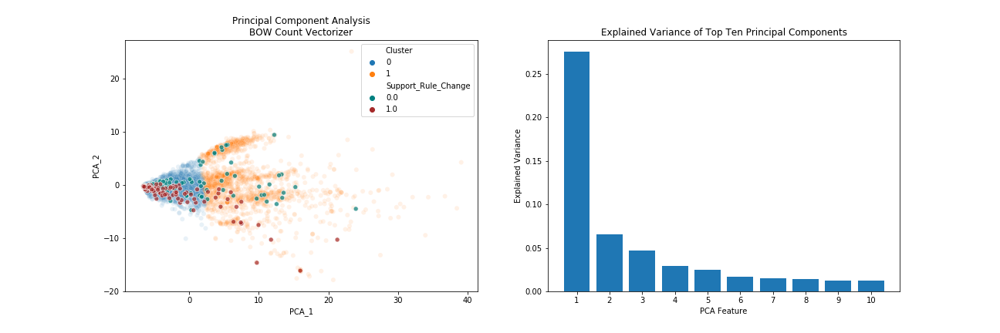

This project applies Natural Language Processing (NLP) techniques to analyze publicly-submitted comments in response to proposed changes to the 2015 Clean Water Rule, namely around the re-definition of "Waters of the United States" (WOTUS). The scope of the project includes:
In early 2017, President Trump signed an Executive Order1 requesting that agencies review a 2015 rule (the "Clean Water Rule") regarding the definition of "Waters of the United States". WOTUS establishes the scope of waters that fall under federal jurisdiction, meaning that they are regulated under the Clean Water Act (CWA). The agencies, including the Environmental Protection Agency (EPA) and the Department of the Army, were instructed to rescind or replace the rule, in accordance with law.
The agencies have since conducted a reevaluation and revision of the definition of WOTUS. This new rule was open for public comment for 60 days until April 15, 2019, and the revised rule took effect on December 23, 2019. The comments are available under "Public Submissions" for docket EPA-HQ-OW-2018-0149 on the regulations.gov web page.
With some exceptions, the comments generally fell into one of two buckets: they were either supportive of the proposed re-definition or opposed to changes to the 2015 rule.
The challenges of this project fell into two broad categories - ones relating to data collection and ones associated with the nature of the dataset.
Only a fraction of the total comments submitted during the comment period are actually publically available in the docket. The docket lists a total of over 625K comments received, however, there are only 11K comments available under "Public Submissions". The EPA and Army explained this discrepancy:
Agencies review all submissions, however some agencies may choose to redact, or withhold, certain submissions (or portions thereof) such as those containing private or proprietary information, inappropriate language, or duplicate/near duplicate examples of a mass-mail campaign. This can result in discrepancies between this count and those displayed when conducting searches on the Public Submission document type.
Second, the project relied on a web scraper2 to actually collect the text of the comments in the docket. The regulations.gov website has an API to request data, however, only organizations (not individuals) qualify for an API key. The text of approximately 3K of the available 11K comments were locked in attachments (PDF or image formats) and unavailable to the scraper. Even with an API key, it's unclear if the text of those comments would be accessible without additional software.
In light of this, the project had to assume the 8K sample of comments used in the analysis are generally representative of the public's views. That said, care was taken to not draw conclusions about the proportions of comments for or against the rule change. There could be thousands of members of an organization sending the same mass-mail form to support or oppose the rule change, but it would only show up once in the submissions.
The dataset is comprised of unstructured, unlabeled text. The lack of labeled data restricted the analysis to unsupervised learning techniques at first. However, a sample of 1,200 comments were manually labeled to gauge the performance of clustering analysis (as a proxy for sentiment analysis) and to enable the supervised sentiment analysis. Of course, this further limited the size of the dataset and having more labeled observations potentially could have improved the performance of the models.
Finally, the overlap of the language used in many comments added to the challenge of finding distinct topics or clusters. Training unsupervised models to find context from a "bag of words" representation turned out to be quite difficult. Below are two example excerpts from comments - both mentioning agriculture and the need for clean water - but they are on opposing sides of the issue:
| Example Supportive Comment | Example Opposing Comment |
|---|---|
| "I support clean water. We need clear rules on how this is to be accomplished. I personally try hard to have as little erosion as possible. Terraces, grass waterways, contour farming, no-till, headlands, etc. As hard as I and other farmers try to conserve and keep waters clean, we need clear rules with common sense to provide us direction. Hopefully this is a step in that direction and we all can work together to feed the world." | "I stand for clean water! Clean and healthy waterways are key to western agriculture, recreation and tourist economies that support our communities. These wholesale changes to the Clean Water Act to limit its jurisdiction provide loopholes in the law and give polluters incentives to discharge dangerous pollutants into unprotected waterways. Please protect our water - the essence of life upon which we all depend!" |
Word clouds proved to be useful to get an overview of the most common words (or bigrams - two-word combinations - as in the analysis below) in the dataset. The first image was created using the entire training set, and provides a nice sanity check that the comments are generally about clean water. For example, if "immigration" showed up in the plot, it would raise concerns about the integrity of the collected comments. But as expected, the most common bigram was "clean water". A closer inspection of the smaller-sized bigrams also uncovers the more opinionated phrases, such as "polluting industries", "dirty water", "clear rule", or "common sense".
Word clouds were also generated for subsets of labeled data to compare the vocabulary differences between supportive comments and opposing comments. No surprises here either - the supporting comments include "farm", "support proposed", and "clear rule" while the opposing ones mention "protection", "keep clean", and "drinking water".
A look at the top-50 words in each set of comments also sheds light on the different vocabulary between the groups. The table below shows the shared words as well as the unique ones found in one set but not the other.
| Supportive Comments | Opposing Comments | |||
|---|---|---|---|---|
| Supportive Words Only | Shared Words | Opposing Words Only | ||
|---|---|---|---|---|
|
|
|
|
|
In order to leverage the power of the machine learning models underpinning the various analyses, it was necessary to convert the comments into a numeric representation. Several techniques were compared, ranging from simple bag-of-word count vectorizations to more advanced word embedding models via the SpaCy library. Other parameters, such as applying lemmatization, including bigrams, and ignoring rare words were tested as well.
The results from the clustering analysis and sentiment analysis helped home in on the best vectorized representation for this dataset for each respective task. In general, each method converted the variable-length comments into a matrix of numbers that were usable in the Scikit-Learn models.
The following topics were generated using a Latent Dirichlet Allocation (LDA) model in Scikit-Learn on the entire training set. LDA is a statistical model to find the different mix of n topics that comprise the collection of comments. The user needs to supply the number of topics, which isn't always clear in an un-labeled dataset. Fortunately there's a perplexity metric, which allows you to compare models using a varying n number of topics to help determine the appropriate topic count for the dataset.
Wikipedia defines perplexity as:
In information theory,perplexity is a measurement of how well a probability distribution or probability model predicts a sample. It may be used to compare probability models. A low perplexity indicates the probability distribution is good at predicting the sample.
Low perplexity scores are better, but there's a practical trade-off with the number of topics. They need to be interpretable to a human and different enough to have value in a practical application. This analysis employed the "elbow" method as guidance to find the appropriate number of topics to balance the score and, after introspection, the utility of the topics.
In the above chart, the sharpest decline in perplexity happens from two to eight topics, with a flattening of the curve thereafter. This indicates that around eight topics is where the law of diminishing returns kicks in thus further improvements to perplexity are minimal. The results of a model set to eight topics were then analyzed to find themes within the top words by topic.
The comments in the dataset tend to share a lot of language, so the most frequent words extend across many of the topics. This makes it hard to distinguish the topics with top words alone.
However, reviewing exemplary comments per topic and adjusting the values for lambda with the relevance metric slider (in the right-hand chart) helped to identify the general theme for a selected topic. Below is a summary of the key words and themes per topic:
An eight-topic non-negative matrix factorization (NMF) model was fit to the training data. The topics closely matched the ones the LDA model found, which was a nice cross-check of the results from that analysis, but the goal for this model was to find "similar" comments, not topics. This functionality could then be applied to perform either batch-labeling (find the similar comments to a known, labeled one), or to find similar comments to an unseen, new one.
Given how each comment was processed into a term-frequency vector, this analysis defined and calculated "similarity" using the cosine value between vectors. With a bag-of-words processing approach, the values in each comment vector align with how many times certain vocabulary words show up in that comment. Therefore, comments with similar vocabulary will have similar vectors, and will therefore 'point' in similar directions in hyperspace.
The cosine of the angle created between any two comment vectors can indicate how similar their vocabulary is - the smaller the angle between the vectors, the higher the value of the cosine(angle) is (recall that cosine(0) = 1, which is the upper bound of the function's range). Therefore, cosine values near one indicate similarity. Likewise, as the language between comments diverges, that angle becomes larger, and the cosine value moves closer to zero. Because NMF doesn't allow for negative values, the resulting cosine values are bounded between zero and one.
Two labeled comments (one supportive and one opposing) were randomly selected from the test set and run through the NMF pipeline. The tables below show the most similar comments in the training set as well as the cosine value between the test comment and those training comments. Note that personally identifying information about the commenter (such as their address) was removed from some comments.
"As a farmer, I need to be able to look at waterways on my land and know immediately if it is or is not federally regulated. The proposed new water rule should make this so. I support the proposed Waters of the US rules."
| Cosine Value | Comment Text |
|---|---|
| 0.9956 | As farmers, we care about clean, sustainable water that help our crops and livestock. I believe that if the rules are defined clearly and logically, and they will not inhibit producers from making sound decisions on their farm, then general support for the new proposed language will garner support. |
| 0.9933 | As a Farm Bureau member I understand that the proposal for the revised definition of "waters of the United States," under the Clean Water Act, is more practical than the 2015 WOTUS Rule. It provides for a more clear, specific, and limited description of what land is subject to regulation. I own 150 acres of farm ground. If I had to hire engineering firms to determine whether of not permits were required to farm, I would not make enough income through renting or farming the land to recoup the cost. The proposed clean water rule will make it more practical for farmers themselves to understand and follow. I strongly support the proposed rule. |
| 0.9911 | I support the new rule for Waters of the US listed as rule 4154. Thank you. |
| 0.9889 | I support the proposed Waters of the U.S. rules. I thank the EPA and the Army Core of Engineers for making the rules more understandable for me and fellow farmers and ranchers. These clearer rules should make it easier for myself and other farmers and ranchers to continue to protect and improve or water resources. With these proposed rules I can look at my land and know what I can do and continue to use my land and try to improve water quality on my farm. I support the proposed rule and thank the EPA for taking this important step to clarify and simplify the rule. I support clean water clearer rules. |
| 0.9874 | I support Clean Water and Clear Rules. As an agronomist who supports the industry of agriculture and is affiliated with the implementation of nutrient management; I would like to see rules that are easy to comprehend and implement. Water is a crucial resource to our society and I applaud the EPA and Army Corps of Engineers for taking a step toward creating rules that are more clear than what the past has provided. The new rules will stimulate economic growth, limit regulatory uncertainty, and respect the roles of Congress and our nation under the Constitution. |
"I am urging the EPA and Army Corps of Engineers to adopt the 2015 Clean Water Rule and abandon the revised WOTUS rule. The Clean Water Rule needs to protect ephemeral waters and wetlands, not limited to the "navigable waters" currently defined, since by nature water is ephemeral and is not contained in one area. Pollution in one area potentially pollutes unlimited areas. Not only is lack of protection a danger to human and animal health, it's also economically unfeasible, considering affects on drinking water. Additionally, loss of wetlands can take decades to restore."
| Cosine Value | Comment Text |
|---|---|
| 0.9801 | We should be doing MORE to protect our waters, not less. It is preposterous that you want to redefine "water" to remove protections from many wetlands and small streams. Please reconsider this unsound rule and keep the Clean Water Act in tact, in order to protect the health of Missouri communities and the waterways that we love and enjoy. The reasons the change should NOT take place: Wetlands are an important part of flood control so the new definition will increase flooding risk in Missouri. The new definition will threaten drinking water for over 2 million Missourians. The new definition ignores importance of wetlands and small streams for recreation. The new definition ignores public will for strengthened protections. Nearly 1.5 million American wrote in to support of the Clean Water Rule (currently in place) in 2014 and 2017. While the comment period for the original Clean Water Rule was open for over 200 days, we are concerned that the agency is only providing a 60-day comment period for the rollback of the Clean Water Rule now. I expect the administration and the EPA to protect our clean water, and I do NOT support efforts to weaken existing protections. My beloved state of Missouri is already woefully behind on implementing the Clean Water Act, and I'm concerned that the new "Waters" definition would take Missouri even further back. |
| 0.9667 | Clean water is vital to every living thing. It affects our ecology, our health, and our quality of life. Finalized in 2015, a Clean Water Rule within that act restored federal protections to half the nations streams, which help provide drinking water to one in every three Americans. This Rule also protects millions of acres of wetlands that provide wildlife habitat and keep pollutants out of Americas great waterways. The Rule is now under attack by the Trump administration through court suits and Executive Orders. The latest threat is a proposed narrowing of the definition of 'Waters of the United States' that would reduce by half the waters being regulated by the EPA concerning such matters as point source discharges; dredge and fill permits, and oil spill prevention programs. Clearly, we need more clean water, not less. I strongly oppose the proposed redefinition of "Waters of the United States" because it greatly reduces the scope of the Clean Water Act to protect wetlands and ensure safe water for all Americans. |
| 0.9623 | Dear Acting Administrator Wheeler, The EPA's proposed water rule will drastically weaken Clean Water Act protections in New Mexico. As an arid state, over 90% of New Mexico's waters do not flow year round and are therefore at risk of losing protections under this proposal. Even our biggest river, the Rio Grande, runs dry in sections during the summer! Many iconic New Mexico Rivers, such as the Gila River, Santa Fe River, Rio Ruidoso, and the Rio Costilla are threatened. Hundreds of thousands of New Mexicans depend on ephemeral or intermittent streams (waters that flow for only part of the year) for drinking water. Consistent flow in our streams, wildlife habitat, recreational uses, and our agricultural traditions are all dependent on the water that flows from our headwater wetlands, many of which will be left unprotected if this rule is passed. Please abandon this unwise rule that will hurt our water and our communities. |
| 0.9621 | I am writing to oppose President Trump's new water rule. This rule will impact clean water where people live, work, and play. The proposed rule would eliminate entire categories of waterways from the protections afforded by the Clean Water Act, threatening the water you use to drink, grow your food, fish, and recreate. Categories of excluded waterways include: interstate waters, ephemeral streams or other isolated waters, non-adjacent wetlands, ditches, upland waters, and groundwater. Please oppose this destructive water rule. |
| 0.9607 | To Whom It May Concern, The Friends of Tennant Lake and Hovander Park, an all-volunteer group, is concerned about the proposal to revise the definition of the Waters of the U.S. and no longer follow the guidance of the Clean Water Rule of 2015. For decades, the Clean Water Act, passed in 1972, has been essential to protecting the Waters of the United States from pollution and degradation. These waters encompass more than navigable rivers and lakes. We believe Congress clearly intended the protection of drinking water, agricultural water and ecosystems, including groundwater and the ephemeral streams that feed into our shared waterways. Tennant Lake and Tennant Creek adjoin the Nooksack River in northwest Washington State. We have seen the vital role the Nooksack plays in protecting and nurturing our precious salmon. Weve also witnessed the flood protection the Tennant Lake wetland provides to the farmers and residents of Whatcom County where we live: In full flood, the River flows up Tennant Creek into Tennant Lake, refilling the wetland, which serves as a nursery for wildlife and waterfowl. Our group and other residents use these natural cycles to illustrate the benefits of Tennant Lake and other wetlands. Our lake also used for hunting and fishing serves as a teaching habitat and beloved local recreational site. Our groups worry is that Tennant Lake and Tennant Creek significant waters adjoining the Nooksack River - could lose the physical, chemical and biological protections currently afforded to wetlands, ground water and creeks by the Clean Water Rule of 2015 if that rule is suspended. Nearby Ferndale continues to expand towards Tennant Lake, and we rely on Clean Water Act protection to preserve the lake and its environs from pollution associated with careless development. Therefore, we ask that the U.S. EPA withdraw the Revised Definition of the Waters of the U.S. and allow the Clean Water Rule of 2015 to proceed. |
The clustering analysis was performed before a sample of comments were labeled to see if there existed an underlying structure within the comment language that separated supporting versus opposing comments. Unfortunately, while the results could loosely support two clusters, the clusters themselves didn't properly distinguish comments by their position. After analyzing the results of a two-cluster KMeans model, it seemed the comments were separated more by topic than position.
Not surprisingly, the pre-processing choices for how to convert the text into a term-document matrix impacted the clustering results. A KMeans minibatch model was run for all vectorization techniques using a range of two to twelve clusters. The following metrics were used to compare them. The model with the best quantitative results also got a qualitative review of a sample of comments to determine whether the clusters were useful.
There weren't any major takeaways from the inertia scores by method. No method showed a clear "elbow" and all showed a minimum inertia-times-clusters at two clusters, meaning the drop in inertia by adding a new cluster wasn't necessarily worth it. However, the silhouette scores distinctly showed that the count vectorizer model generated clusters that were generally more distinct and separate than the other methods. The chart below shows the silhouette score by pre-processing method for models ranging from two to twelve clusters.
The following charts show all the metrics from the count vectorizer models.
Once the quantitative metrics helped narrow down the field to a model using count vectorized data, the next step was to examine the results qualitatively and visually. First, a sample of comments were read from each cluster. This turned out to be the first indication that there was a lot of overlap in the two clusters - both clusters had comments from each side.
Second, two dimensionality reduction techniques were employed - Principal Component Analysis (PCA) and TSNE - to visualize the clusters in 2D. A sample of comments were then labeled and colored and included in the charts to show the ground truth of a comment's support or opposition. Below are the resulting charts.
As noted above, the clustering analysis was not a home run to distinguish the position of a comment. The KMeans model and dimensionality reduction techniques uncovered some stucture within the vectorized data, but unfortunately, it didn't seem to hinge on the language being supportive of the rule change or opposed to it.
TO COME
Overall, the LDA model found relevant topics spanning the dataset. These topics were also confirmed while reading through a sample of 1,200 comments to label them for the sentiment analysis task. There were a few one-off comments that made points outside the eight categories, but they seemed to be the exception over the norm.
The NMF model also proved useful as an efficient way to identify similar comments. This functionality could be extended to batch-label comments to broaden the labeled set, allowing for the use of more complex modeling options for the sentiment classifier. It was also useful as a pseudo k Nearest Neighbors identifier - given a new or unlabeled comment, it could find the most similar labeled ones to determine the more-likely side of the issue the commenter was on.
The final clustering analysis employed a KMeans clustering algorithm with two clusters fit on training data pre-processed with the top performing (based on silhouette scores) count vectorizer. After inspecting a sample of comments in each cluster, then performing dimensionality reduction with Principal Component Analysis and TSNE to visualize the clusters against a sample of labeled data, the clusters proved to have a lot of overlap of opposing and supportive comments.
The visualizations showed there were groupings and structure in the data, but the model unfortunately wasn't able to distinguish the groups clearly in terms of sentiment. Instead, the clusters the model found appeared to be driven more by topic. This is somewhat attributable to the nature of a simple "bag of words" pre-processing technique like the count vectorizer.
As noted above, one of the challenges with this dataset was how much shared language occured between supporting and opposing comments - "I support the current rule change" vs. "I support the 2015 ruling", or "I want clean water for my grandkids" vs. "I want clean water and clear rules". The "bag of words" preprocessing technique wasn't able to preserve the context that the similar language occured in, and therefore put limitations on the clustering model's ability to be a proxy for sentiment analysis. Pre-processing with different vectorizers, limiting features, and using only bigrams didn't improve the clustering results.
TO COME